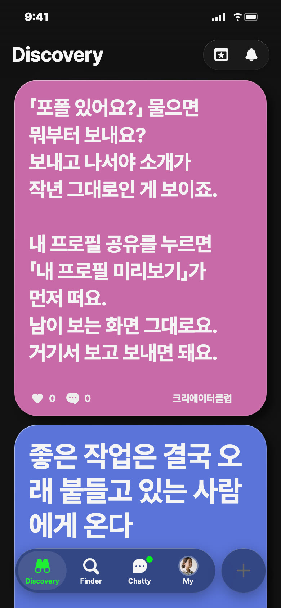
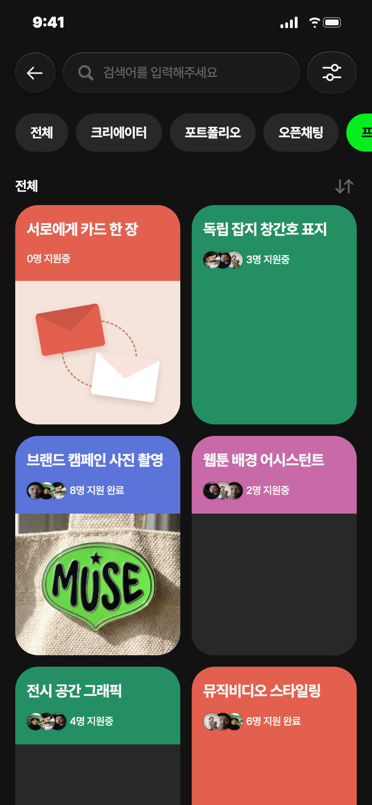
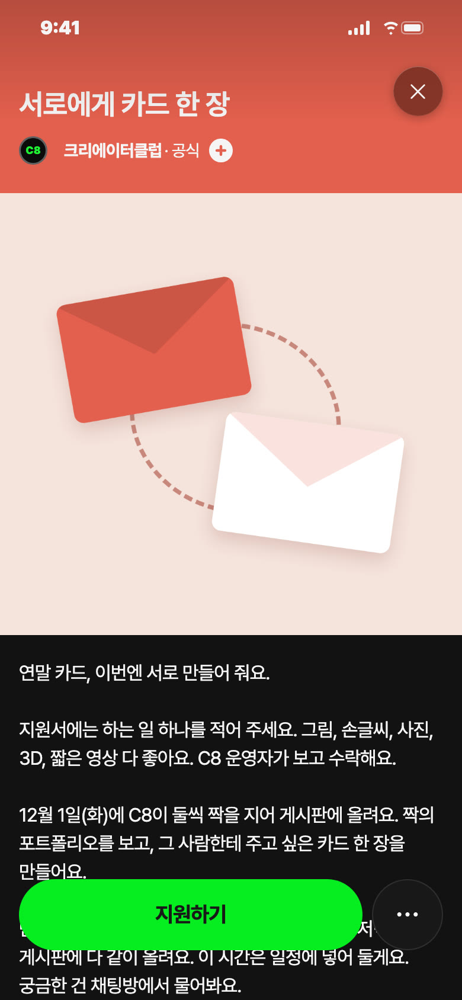
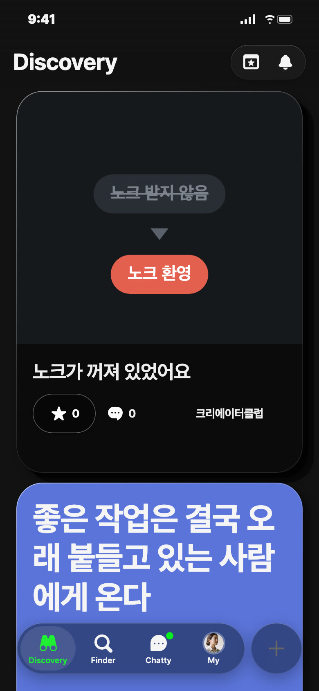
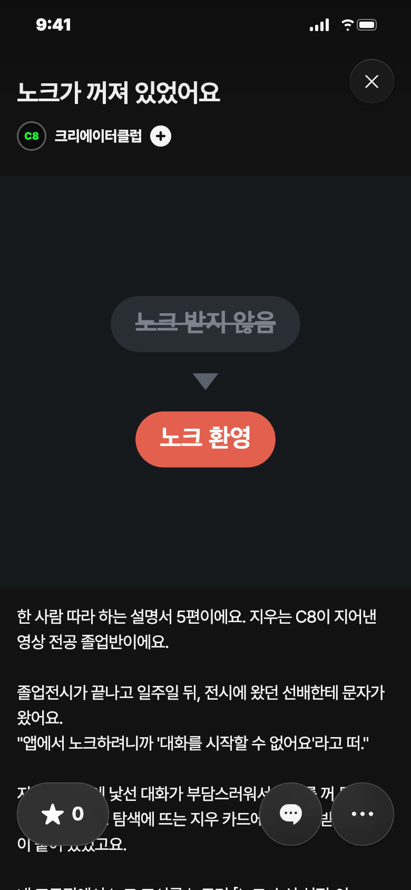

C8 앱 게시 시안 · 11/15(일) — 오늘 추천: 영감 · 이럴 때 이 기능
오늘 추천 · 영감 · 오늘 오후 7시 · 분홍

칸: 보여 주기 × 쓸모 (이럴 때 이 기능)
왜 오늘: 졸전·연말 포폴 요청이 몰리는 다음 주를 앞둔 일요일 저녁
보낼 사람: 포폴 링크 돌리는 동기에게 「보내기 전에 이거 봐」
받고 싶은 댓글: 「미리보기로 보니까 대표작이 3학년 과제였네요. 바꾸고 보냈어요」
영감 글
「포폴 있어요?」 물으면 뭐부터 보내요? 보내고 나서야 소개가 작년 그대로인 게 보이죠. 내 프로필 공유를 누르면 「내 프로필 미리보기」가 먼저 떠요. 남이 보는 화면 그대로요. 거기서 보고 보내면 돼요.
비축 · 프로젝트 · 코랄


칸: 서로 만들어 주기 × 놀이
왜 비축: 수요일 자리 후보(26.46.0 기준) — 운영자·46 출시일·짝 짓기 담당은 게시 전 확정
보낼 사람: 그림 그리는 동기에게 「이거 하자, 누가 너 카드 만들어 줌」
받고 싶은 지원 채팅: 「손글씨 해요. 짝 포폴 보고 한 문장 골라 써 드릴게요」
제목
서로에게 카드 한 장
카테고리
서로 만들어 주기
모집 내용
하는 일 하나 · 11/28까지 지원 · 12/1 짝 발표 · 12/24 저녁 8시 같이 공개 · 상품 없음
설명
연말 카드, 이번엔 서로 만들어 줘요. 지원서에는 하는 일 하나를 적어 주세요. 그림, 손글씨, 사진, 3D, 짧은 영상 다 좋아요. C8 운영자가 보고 수락해요. 12월 1일(화)에 C8이 둘씩 짝을 지어 게시판에 올려요. 짝의 포트폴리오를 보고, 그 사람한테 주고 싶은 카드 한 장을 만들어요. 만든 카드는 짝한테 비밀로 두고, 12월 24일(목) 저녁 8시에 게시판에 다 같이 올려요. 이 시간은 일정에 넣어 둘게요. 궁금한 건 채팅방에서 물어봐요. 받은 카드는 짝에게 물어보고 내 포트폴리오에 올려도 돼요. 설명 칸에 만든 사람 @도 같이요. 지원은 11월 28일(토)까지, 상품은 없어요. 내 작업을 처음 본 사람이 만든 카드라, 내 포트폴리오가 어떻게 읽혔는지도 같이 와요.
비축 · 포트폴리오


칸: 앱 소개 × 일 받기
왜 비축: 설명서 연재 5편 후보(화 12/1 자리) — 3편 11/17·4편 11/24 다음
보낼 사람: 졸전 끝낸 동기에게 「너 노크 꺼져 있더라」
제목
노크가 꺼져 있었어요
설명
한 사람 따라 하는 설명서 5편이에요. 지우는 C8이 지어낸 영상 전공 졸업반이에요. 졸업전시가 끝나고 일주일 뒤, 전시에 왔던 선배한테 문자가 왔어요. "앱에서 노크하려니까 '대화를 시작할 수 없어요'라고 떠." 지우는 예전에 낯선 대화가 부담스러워서 노크를 꺼 둔 걸 잊고 있었어요. 탐색에 뜨는 지우 카드에도 「노크 받지 않음」이 붙어 있었고요. 내 프로필에서 노크 표시를 누르면 「노크 수신 설정」이 열려요. 「노크 받지 않음」을 「노크 환영」으로 고르고 변경하기를 누르면 끝이에요. 받지 않음으로 두면, 다른 크리에이터는 노크하기를 눌러도 「상대방이 지금은 노크를 받지 않고 있어요.」만 봐요. 팀 앞으로 온 의뢰와 연락은 이 설정과 관계없이 받아요. 전시에서 지우 작품을 보고 찾아온 사람이, 문 앞에서 돌아가고 있었던 거예요. #설명서 #노크